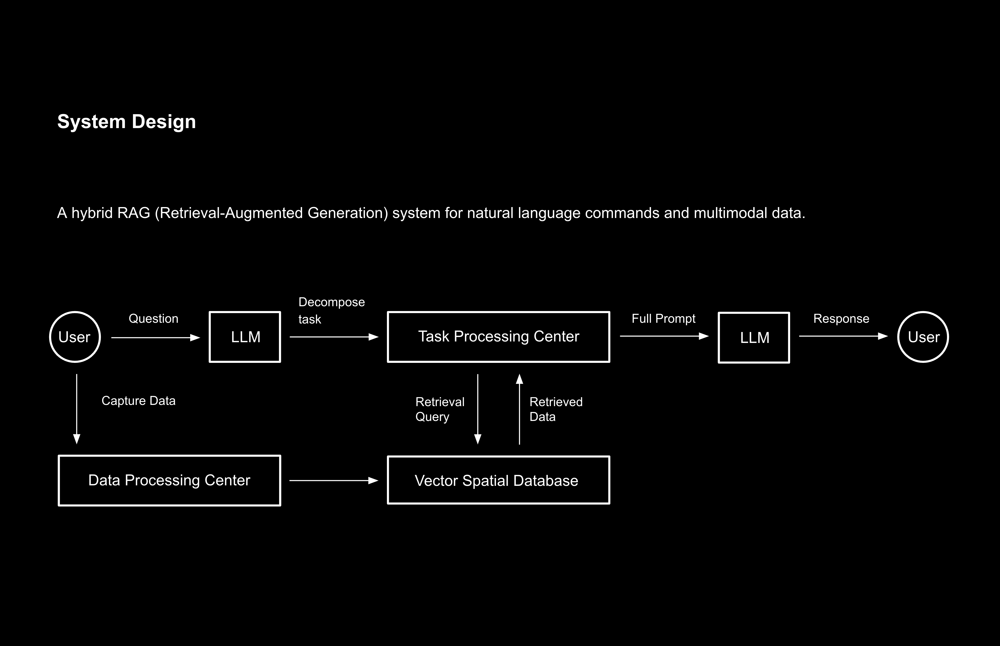

With the help of LLM AI and the RAG system, we can enable city residents to jointly collect spatial data and construct a shared spatial intelligence that is dynamically updated and precise and detailed. This will ultimately enable complex spatial functions such as indoor spatial navigation, spatial memory, and retrieval of target objects. The entire process will be completed through humanized and barrier-free semantic interaction.
Background

Next-generation spatial applications - Spatial AI Agent
In the complex city, we often need to shuttle between different spaces to complete tasks, meet people and visit things. Mobile navigation, life services and social media have become indispensable applications in urban life, even though they often fail to meet some user needs, such as accurate indoor navigation and spatial guidance.
However, with the implementation of LLM artificial intelligence, we have new possibilities...
Semantic interaction

The multimodal LLM provides an intelligent foundation and interaction path for semantic interaction. Programmatic interaction between users and applications is transformed into anthropomorphic interaction with AI, that is, natural interaction including chat, images and even gestures.
This interaction method will make the process of using spatial intelligence very smooth and effortless, and users will gradually transform computer applications into a kind of life partner.

AI Agent System

A Spatial AI Agent application is built by integrating RAG, LLM and spatial data collection systems, so that users can get solutions to complex spatial problems through the simplest semantic interaction.
User Scenarios

It is difficult for delivers to find the exact location of a customer's home in an unfamiliar residential area, and this process wastes a lot of time. They need accurate navigation of the interior spaces of residential areas and key location prompts.

Users forget the location of important objects in complex spaces, such as parking lots, and cannot find their vehicles.Based on the point cloud map and key spatial elements, the user's activity path can be recorded in real time, and the memory can be called to generate navigation when the user makes a request.

Robots lack understanding and memory of the real world. Through letting the robots access massive amounts of real-world spatial data with time information, we can build an embodied intelligence knowledge base.
Data Collection and Processing

Users can directly collect spatial data through the phone's camera and LiDAR sensor, and then upload it to the cloud after pre-processing it through a local program to build a RAG database.